You Can Make Money Harvesting And Selling Botanicals
Almost every relatively green region on the U.S. and Canada boasts at least one native "medicine plant" which homesteaders can make money harvesting.
By the Mother Earth News editors
September/October 1977
Not everyone lives where medicinal roots and herbs can be found in abundance. Almost every relatively green region of the U.S. and Canada, however, boasts at least one native "medicine plant". Which means-as Lyle E. Staab, Jr., of St. James, Missouri knows so well-that almost every homesteader or rural dweller in North America can avail himself/herself of the novel make-money-in-the-outdoors technique described below.
Maybe you didn't know it, but-even in this day and age of chemical this and synthetic that-literally hundreds of drugs, medicinal ointments, and cosmetics are still made from raw, dried roots and herbs. And I'll also bet you probably didn't know that the companies which process these roots and herbs (or "botanicals") into medicines generally obtain their raw materials from freelance foragers . . . people who collect, dry, and sell medicinal plants for profit.
I've been collecting and selling common botanicals-May apple, poke root, and blackberry root, to name a few-for some time now, and (overall) I've found it to be a worthwhile moneymaking activity. With the "tricks of the trade" I'm about to give you here, you should be able to make worthwhile amounts of money this way, too . . . provided, of course, that you don't mind working outdoors or setting your own hours! (You'll be doing both!)
HOW PROFITABLE CAN IT BE?
The prices paid for botanicals (of which there are more than 250 different kinds) range from as little as 5d per pound for boneset herb to as much as $75 a pound for wild ginseng root. (Note: Ginseng is down right now from its former high of $90 per pound, due to the fact that the U.S. Governmentwhich is conducting an investigation into whether wild ginseng should be declared an "endangered species"-has forbidden all U.S. firms from exporting the root to Chinese markets. If and when this export ban is lifted, 'seng prices will probably go back up again.)
Some of the more common botanicals-and their approximate market values-are shown below:
Fifty cents a pound may not sound like much (especially when you consider that a botanical must usually be washed and allowed to dry completely before it can be shipped off to market). Fact is, though, a practiced forager can make enough money from the sale of medicinal roots and herbs to pay the rent . . . and then some. I know one man-Harry Kalb, aged 77-who can back me up on that. Says Harry: "During the Great Depression, I fed my family on the proceeds of root-diggin'. Paid rent, too! Back in '29, May apple was bringin' four cents a pound, and competition was tough, what with lots of folks diggin'. We did all right, though: Sometimes, the five of us-me, my wife, and three kids-dug 200 pounds a day!"
Of course, the chances of your coming across 200 pounds ($100 worth) of May apple root in a single day aren't all that good. You should, however, be able to find worthwhile quantities of several different plants in the course of a week. Exactly how much money you make in this business depends, then, on both the abundance (and type) of botanicals in your area . . . and how hard you're willing to work to find 'em. And, quite frankly, the price of many medicinal plants is as high as it is today simply because most folks are now too lazy to find'em and dig'em.
HOW TO GET STARTED
If you think you'd like to try your hand at collecting and selling botanicals, the first thing you should do is write to several herb buyers (see the list of addresses that accompanies this article). They'll send you their current price sheets, along with information on which part(s) of the various herbs (i.e., the leaves versus the roots) to gather, how to prepare your harvest for sale, and any special herbal needs the companies might have at the moment.
Next, get your hands on one or more of the following books: The Herbalist by J.E. Meyer; Ginseng and Other Medicinal Plants by A.R. Hardingand Douglas B. Elliott's Roots: An Underground Botany and Forager's Guide . . . all of which are available from any good bookstore These books will tell you-in words and pictures-where the common medicinal herbs can be found, what they look like, when they can be harvested, etc.
Of course, as good as the above books are, they're no substitute for the advice of an experienced forager (or "senger", as the folks who specifically hunt ginseng are called). If you know of a practicing root- or herb-hunter in your area, try to strike up an acquaintance. Maybe-if you're patient, and if the individual is willing to show you his or her favorite hunting grounds (which is not likely)-you'll be taken on as an apprentice. It may not work . . . but it's worth a try.
TOOLS OF THE TRADE
The only tools you'll need for botanical foraging are a shovel, a corn knife, and a bushel basket or gunny sack in which to stash the harvest. In addition to the above pieces of equipment, I like to tote along a potato fork, a good-sized pocketknife, and (when I'm harvesting thorny plants) some work gloves. You'll find the additional tools that suit you best, I'm sure, after a few foraging sessions.
DIFFERENT STRATEGIES FOR DIFFERENT FOLKS
Quite a few botanical-hunters like to restrict their foraging efforts to just the higher-priced medicinal plants . . . the idea being that it's better to look a little longer and (possibly) wind up with a "catch" that's more than worth the extra time spent searching. Retired factory worker Bill Skaggs of St. James, Missouri-one of my few local "competitors"-falls into this category. He makes $150 to $200 per year hunting ginseng and goldenseal . . . and he refuses to "fool" with any botanicals that bring less than a dollar a pound.
My approach is somewhat different: I go after the more common botanicals-May apple, pokeweed, and blackberry in particular-and then harvest large quantities of them, to make up for their lower market price. I find, in other words, that my time is better spent digging than searching. And the nice thing is, Bill Skaggs and I never get in each other's way.
To specialize or not to specialize . . . that is the question. And only you know the answer.
THE HARVEST
A number of botanicals (ginseng and goldenseal, for example) have become all but extinct lately due to indiscriminate overharvesting by zealous foragers. To keep this situation from becoming worse, it's important that you adhere to the following commonsense rules when harvesting any root, bark, or herb:
[1] Gather only the part of the plant you're going after. (There's no sense pulling a specimen up by the roots if the berries or the leaves are what you want.) Likewise, don't take all the top growth from any one plant when you can harvest a small amount of foliage from a large number of plants.
[2] Collect bark from one side of the tree trunk only. If you debark a tree all the way 'round its circumference, you might as well strip the whole plant . . . because you've just killed that particular tree anyway.
[3] Dig roots in a manner which will allow the future regrowth of plants in the area. (Take roots, for instance, from several spots near the center of a bed . . . that way, the remaining plants will be able to "fill in" again.)
MARKETING YOUR WARES
Once you've brought your medicinal roots and herbs home, rinse them thoroughly in clean water and lay them out to dry in a wellventilated area. (Be sure to label the drying areas so that later-when you're ready to ship your dried roots, barks, and/or foliage-you won't forget what's what.) This is an important step. Herb buyers will not accept botanical materials that have not been thoroughly clean and allowed to dry completely.
When your plant materials are bone-dry, pack them in separate boxes, label them, and ship the packages off to market via parcel post. Send May apple root to the firm that pays the most money for May apple root, ship bloodroot to the company that pays the most for bloodroot, and so on. (The prices quoted for various botanicals can-and do-vary as much as 50% from one company to the next.)
Before shipping a large quantity of materials, you'd do well to send small samples of your wares to the firm(s) you wish to do business with and ask for a positive identification of the roots, barks, etc. (What you thought was snakeroot may actually be something totally different... and--perhaps--totally worthless.) Also, estimate how many pounds of the pure material you can deliver and ask for a firm price quotation based on that amount. You may get a quote that's considerably better (or worse) than the "going rate" printed in the company's price sheet.
And remember that-as a rule-dried roots and barks don't depreciate in value. If you don't like the prices being offered for your roots and herbs this year, you can always stash the goods away until next year, when prices may be higher.
PHOTO BY MARTIN FOX
Bloodroot in the wild . . . and bloodroot uprooted. Notice the sliced-open root's crimson color.
A SURVIVAL SKILL WORTH CULTIVATING
Whether you ever harvest and sell medicinal plants yourself or not, "botanical hunting" is something you should at least know about. It's one of those rare make-money-outdoors activities that requires no special knowledge or equipment (beyond what's readily available to the average person) to get started, but that can lead to a steady income-good times or bad, off-season or on-of from a few dollars a month to several hundred. (Botanical foraging is an especially good parttime moneymaking activity for those slack moments when there's little to do around the old homestead.) Botanical hunting: It's challenging, it's fun, and it's lucrative. What more could you ask for?
.
|
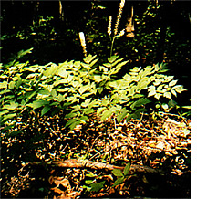 PHOTO BY MARTIN FOX Freshly harvested black snakeroot . . . and the (potentially valuable) stand from which the plant at left was taken. |
 PHOTO BY MARTIN FOX Foragers harvest roots from a bulldozed field . . . and washed and dried, these blackberry roots will sell for 10? a pound. |
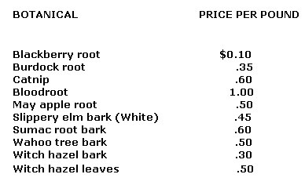 PHOTO BY MARTIN FOX One of the more common (in the East) botanicals, May apple . . . and a much rarer ""find"", goldenseal. Note the red berry . |
|
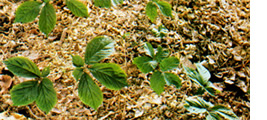 PHOTO BY MARTIN FOX Pokeberries-such as the ones shown here-bring up to 50? a pound on the open market . . . and washed poke root, ready to be dried and sold. |
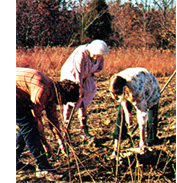 PHOTO BY MARTIN FOX Bloodroot in the wild . . . and bloodroot uprooted. Notice the sliced-open root's crimson color. |
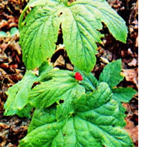 PHOTO BY THE AUTHOR |
|
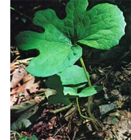 PHOTO BY THE AUTHOR |
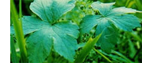 PHOTO BY MARTIN FOX |
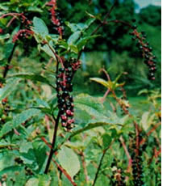 PHOTO BY THE AUTHOR |
|
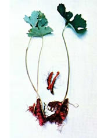 PHOTO BY MARTIN FOX |
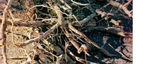 PHOTO BY MARTIN FOX |
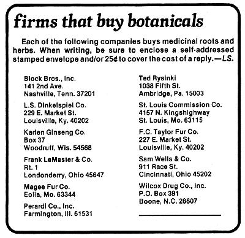 |
|
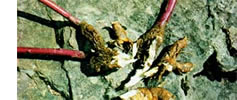 |
|
|